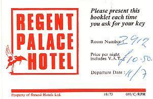
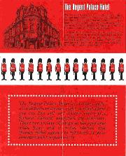
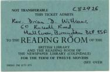
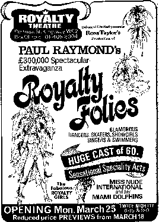

A day in London12.07am Tuesday. We are in our room, 2912, on the top floor of the Regent Palace Hotel. We have not long returned from the theatre. It has been a very full day. We had breakfast [at Billericay] with Eva, Mrs Harrison and Ivy at 8.15am, prayed together afterwards, and left about an hour later for London. On the way we called in at Ann and Geoff’s [at Brentwood] to leave the key to The Mansard. They will join us at Glastonbury, D.V., later in the week. We left Collins Way at about 10.15am and arrived in the West End some 90 minutes later. It was 11.53am when we parked the car at the National Car Park in Denman Street. It took rather a long time to check in, but having found our room I phoned Janet at the office, then we went to the Old Kentucky for lunch. We had lager and lime, a salad and apple-pie (Freda a pancake). Afterwards we walked down the Haymarket to Trafalgar Square where I tried unsuccessfully to exchange a $10 traveller’s cheque sent me by Mr W.J. Dawe, then we crossed over to Charing Cross Road to the Garrick Theatre to pick up tickets for a show tomorrow night [Moira Lister in Birds of Paradise]. After this we carried on down the Strand and Aldwych to Portugal Street to collect tickets for tonight from the Royalty Theatre. It was a beautiful day. After calling at the theatre we walked all the way to the British Museum, where we were able to obtain the Reader’s Tickets we applied for in February. We then spent an hour in the Reading Room. On our way back we called at Philips Electrical Ltd. in Shaftesbury Avenue to obtain some literature about their Video Cassette recorder, which I hope D.V. to purchase. We were also able to see the machine demonstrated. It costs £465.95. After this we walked all the way back to Piccadilly Circus and had a few minutes rest in our room before going out again to buy paper hankies from Boots across the way, and to have a salad sandwich, pastry and cup of tea at the Old Kentucky. After this we just had time to change before going to the theatre. Again we walked all the way there, and back. I am at a loss for words when it comes to describing Paul Raymond’s Royalty Folies. It was the most lavish spectacle we have ever seen, with nude dancers, fabulous costumes and incredible settings. There were performing dolphins — the first we have ever seen. Even the supporting acts were good, the Clark Brothers, negro dancers and entertainers; Georges Schlick, a very clever ventriloquist; and Luxor Gali-Gali, a conjuror and magician who managed to produce chickens and a duckling from inside the jackets and trousers which two men were wearing. There were some fantastic scenes. It really was a marvellous show. It cost £300,000 to put on. The thing which astonished us was that the theatre was not full. The show ended at about 11.0pm. On our way back to the hotel we stopped to have lemon-tea. London is an incredible city. Today the nation’s capital was thronged with young people of almost every nationality. |
    |
|
|
The Emperor has been deposed9.35pm. There is nothing much to record today. During the morning Janet typed a list of some of the books given me by Olive Barber, and then typed a list of the cassette recordings of my sermons, Bible Studies and lectures. This afternoon, after heavy rain, we drove in the Cresta to Street where Janet ordered a book for me from the Library, and Freda went to Bond’s to enquire about the cost of car seat covers which Julia has suggested we might buy for my parents’ wedding anniversary. Afterwards we drove onto the moors and went for a walk. When we got back I began copying some 1968 Bible Study tapes on Speaking in Tongues, which Arthur has asked me for. I have been continuing this work tonight. The main news item this morning was that Emperor Haile Selassie had been deposed by the Ethiopian Army. He is 82 and has ruled Ethiopia since 1916. So has come to pass the Word of the Lord which was brought His Imperial Majesty in April 1965. Included in that message was the statement that the Emperor had befriended many nations to secure the safety of his own land, but that his enemies were within his own borders. I remember speaking to many hundreds of young students at a High School in Addis Ababa, and commenting afterwards on their left-wing revolutionary politics. Quite probably, some of those youths have now been involved in the overthrow of the Monarchy. It is symptomatic of this society’s lack of values that, on the day when one of the world’s last great rulers has been overthrown, the leading item on ITV’s News at Ten, which we are now watching, has been the sacking of Brian Clough from the managership of Leeds United where he took over only seven weeks ago. I forecast this, not by the Word of the Lord, but by common sense and logic, right from the start, and was talking about it to Freda earlier this week. |
§ portrait/740912haile.jpg |
|
A full account of the mission to Ethiopia is contained in Missions & Miracles No. 4 |